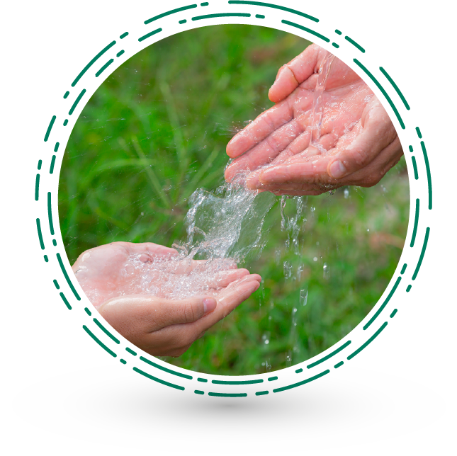

Te damos la bienvenida al curso Sistemas de Información asociados a la prestación el servicio de acueducto y alcantarillado
El propósito de este espacio de aprendizaje es identificar los elementos fundamentales de los sistemas de información asociados a la prestación del servicio de acueducto y alcantarillado.
Duración: 1 hora
Haz clic en el botón iniciar para comenzar esta experiencia